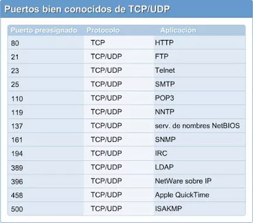
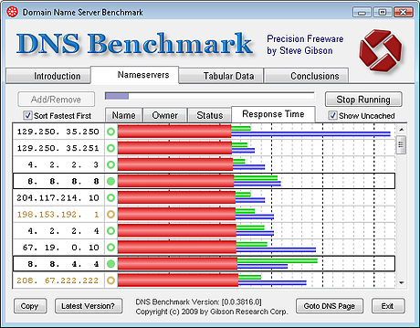

Sistema de nombres de dominio.
|
En cuanto al puerto dns, el servidor dns usa el protocolo UDP y el puerto dns número 53. Si el puerto dns no responde, no podrás consultar, comprobar ni verificar los dns de tu dominio |
 |
DNS PUBLICOS
En cuanto al puerto dns, el servidor dns usa el protocolo UDP y el puerto dns número 53. Si el puerto dns no responde, no podrás consultar, comprobar ni verificar los dns de tu dominio. |
 |